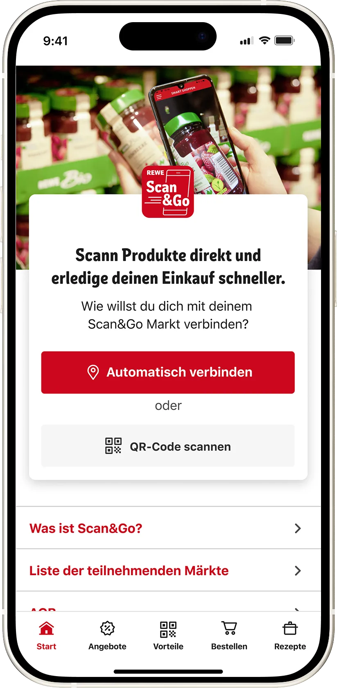
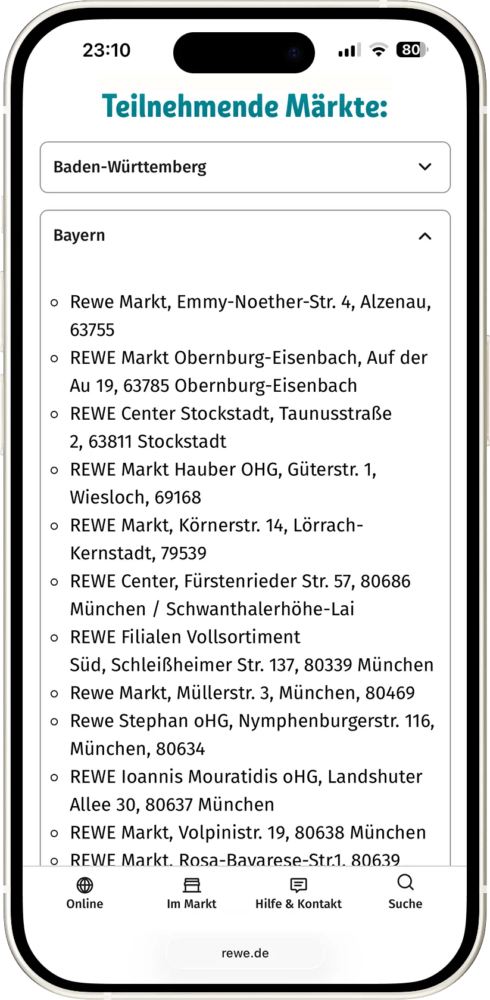
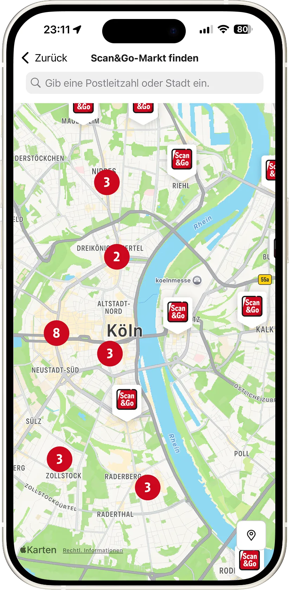
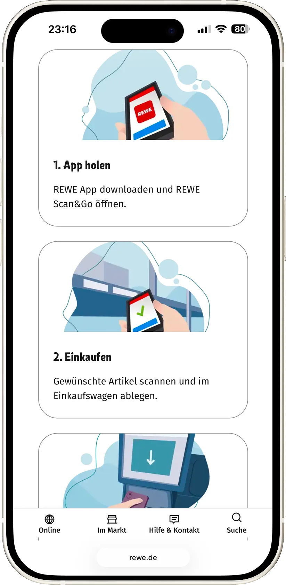

Redesign Scan & Go
Nutzerakzeptanz gesteigert durch neue Landingpage und hinzufügen von erklärenden Animationen in der User-Journey.
Firma
REWE Digital
Jahr
2024-2025

Vorher: Technische Verbindungsseite. Mangelnde Informationsklarheit und veraltetes Design.
Nachher: Zentrale Informationsquelle. Animation erklärt den kompletten Ablauf von Scan & Go.


Vorher: Nutzer wird auf die REWE Website weitergeleitet und erhält eine unübersichtliche Liste von Scan & Go Märkten.
Nachher: Nutzer kann in der REWE App mithilfe einer interaktiven Karte einen Scan & Go Markt schnell finden.

Vorher: Nutzer wird auf die REWE Website weitergeleitet und erhält einen oberflächlichen Ablauf von Scan & Go.
Nachher: Detaillierte Anleitung. Durch Carousel slider können FAQ's prägnanter platziert werden.
Animationen für den Zebra PS20 Handscanner zur visuellen Vereinfachung der Abläufe in REWE Scan & Go.
Informationen
REWE Scan & Go ermöglicht Kunden, während des Einkaufs Produkte selbst mit dem Smartphone oder einem Handscanner zu erfassen.
Das System zeigt jederzeit den Gesamtbetrag und die erfassten Artikel an, was volle Kostenkontrolle und Transparenz bietet.
Der anschließende Bezahlvorgang an der Kasse wird deutlich beschleunigt, da die Ware nicht erneut gescannt werden muss.
Das Problem
Der Einkauf von Lebensmitteln ist eine tief verwurzelte Routine. Die Nutzer stehen neuen digitalen Prozessen skeptisch gegenüber, da sie Scan & Go als kompliziert wahrnehmen.
Die größte Hürde ist daher die Scheu vor der ersten Anwendung, weshalb zu wenige Neukunden den Service nutzen.
Die Landing Page fungiert primär als technische Verbindungsseite und nicht als Überzeugungsinstrument. Die mangelnde Informationsklarheit führen zu einer hohen Absprungrate und vermindern die Erstnutzung.
Das Ziel
Das Ziel besteht darin, die Landing Page zu einer zentralen Informationsquelle zu transformieren. Nutzer sollen sich erstmals vorab umfassend über den Service informieren können.
Gleichzeitig soll die Lösung eine intuitive Kundenerfahrung beim Einkauf im Markt bieten. Dies gelingt durch visuelle Vereinfachung und eine aktive Prozessführung während des gesamten Ablaufs (mithilfe von erklärende Animationen).
Meine Rolle
Meine Rolle umfasst die aktive UX/UI-Konzeption der neuen Landing Page.
Zusätzlich entwickelte ich Eigenständing die Animationen zur visuellen Vereinfachung der Abläufe in REWE Scan & Go und dokumentierte diesen Lottie-Animations-Workflow für Design und Entwicklung.
Das Ergebnis
Die neue Landing Page fungiert nun als zentrale Informationsquelle, die erstmals die Vorabinformation in der Pre-Shopping-Phase ermöglicht.
Die Entwicklung von Lottie-Animationen verbessert das Nutzerverständnis im Markt nachhaltig.
Durch den dokumentierten des Lottie-Workflows hat das Mobile-App- sowie das Webteam der REWE Digital eine Blaupause um effizient und eigenständig weitere Animationen erstellen zu können.